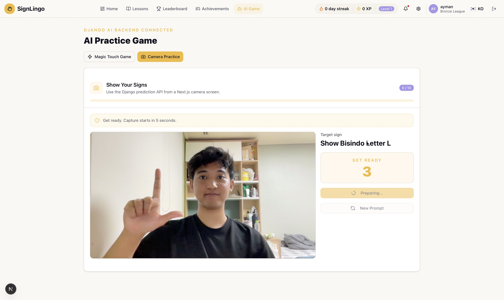
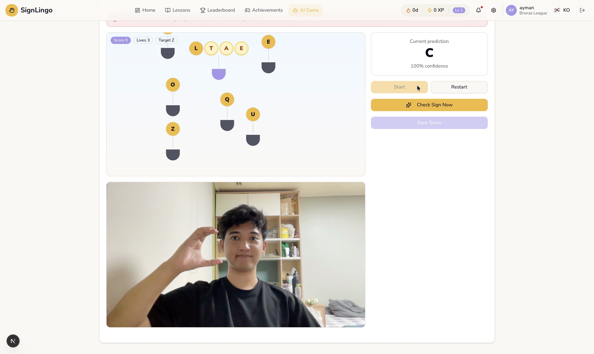
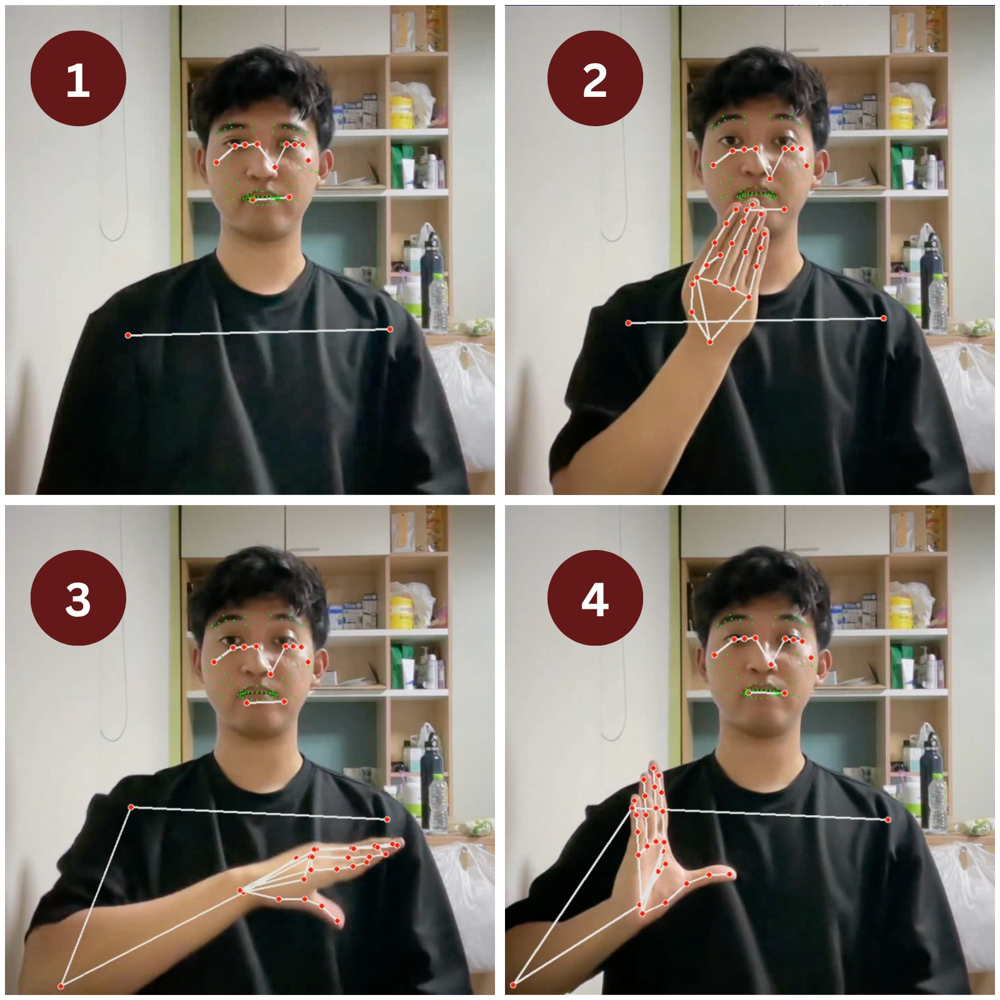
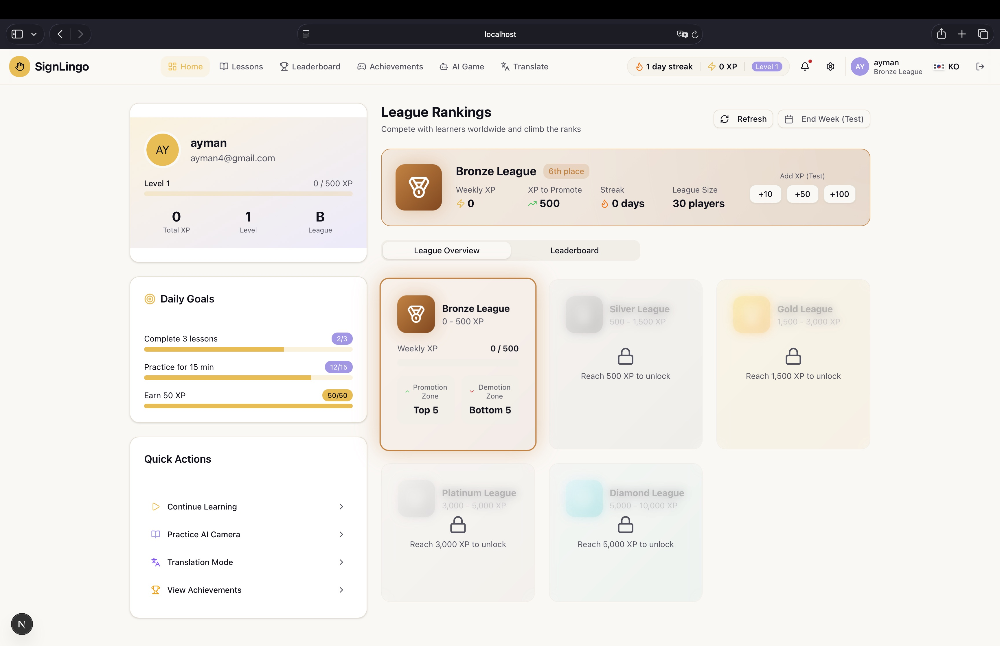
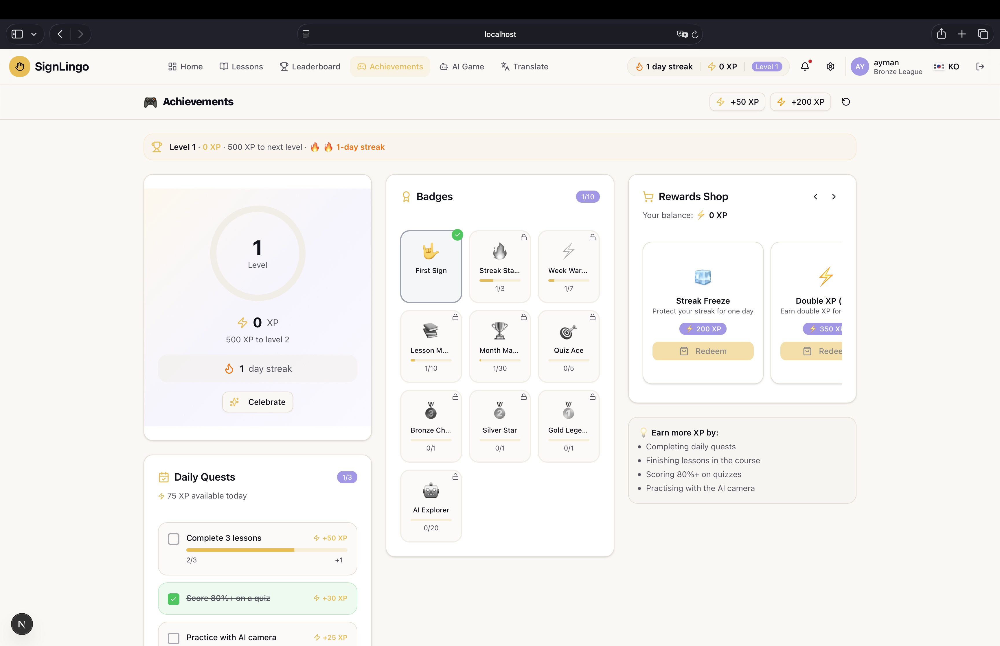
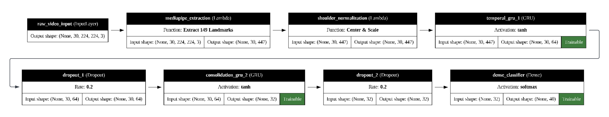
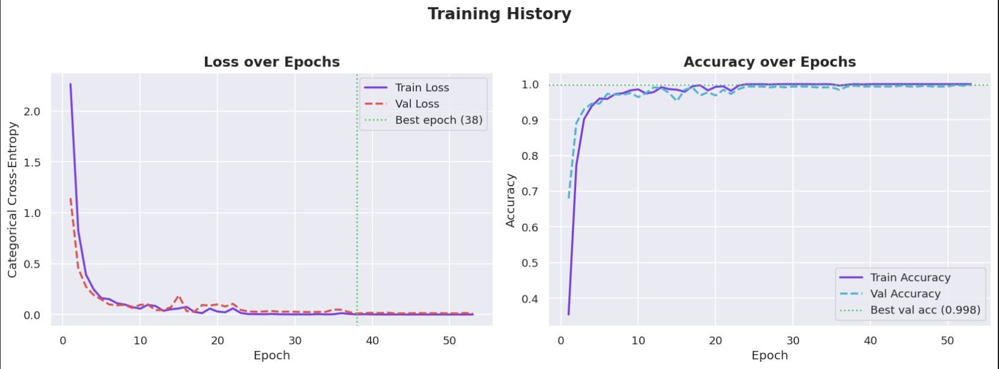
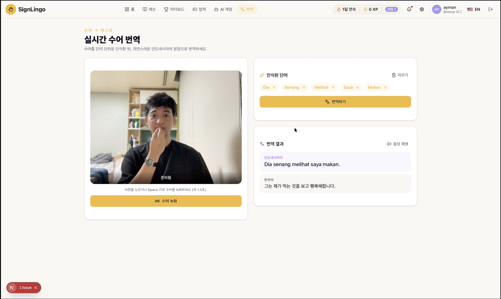

01 · Problem The Challenge
Learning sign language in Indonesia is prohibitively expensive due to the high cost of private tutors. The only free alternatives are passive methods like static videos, where learners receive no feedback on whether they are signing correctly.
Humans are social creatures, and communication is a fundamental right — being disabled should not mean being disconnected from society. However, while modern Computer Vision is accurate, it typically requires high computational power that the average Indonesian, often relying on budget devices, simply does not possess.
02 · Solution The Approach
We built SignLingo to make learning accessible to everyone, everywhere. Since it is web-based, anyone can access it easily. To solve the hardware constraint, I researched and implemented a dual-model system: a Hybrid CNN-LSTM for static alphabet recognition and a MediaPipe-GRU pipeline for dynamic gesture recognition. Both architectures ensure high accuracy without requiring expensive GPUs, allowing the AI to act as a personal tutor that gives instant feedback directly in the browser.
03 · Leadership My Role
SignLingo started with a simple goal: making sign language education accessible. As Product Owner, Scrum Master, Lead Developer, and Researcher, I managed a 10-person team across our business, research, and engineering tracks. While I guided our agile sprints and product strategy, my impact was heavily technical. I personally spearheaded the AI development, building the temporal feature extraction models using MediaPipe, LSTM, and GRU architectures. Alongside the machine learning, I engineered the entire backend architecture from the ground up. By bridging deep technical execution with our business roadmap, I ensured our vision translated into a robust, working application.

04 · Platform The SignLingo Ecosystem
A holistic platform designed to combine state-of-the-art AI inference with an engaging user experience. SignLingo features three core modes — each powered by real-time gesture recognition and designed to make learning interactive, not passive.
📷 Camera Practice
The Camera Practice mode turns your webcam into a personal sign language tutor. The AI prompts users with a target BISINDO letter, then captures and classifies their gesture in real-time using our CNN-LSTM model. A countdown timer, progress tracker (0/10), and instant "Get Ready" cues create a structured, quiz-like experience — bringing the feedback loop of a private tutor to anyone with a browser.

✨ Magic Touch Game
Inspired by gamified learning apps, the Magic Touch Game combines real-time sign recognition with an arcade-style falling-letters mechanic. Letters descend from the top of the screen, and the user must perform the correct sign in front of their camera before the letter reaches the bottom. The AI displays its current prediction and confidence level, while a lives system and score tracker keep the challenge engaging. It transforms sign language practice from repetitive drills into an addictive game.

Real-Time Landmark Detection
At the core of every mode is our landmark detection engine. MediaPipe extracts spatial keypoints from face, hands, and upper body — capturing the full gesture context needed for accurate sign recognition.

MediaPipe keypoints across a gesture sequence
Ultra-Low Latency
Inference times of 40–50ms for seamless, real-time sign language recognition in the browser.
Robust Tracking
Accurate landmark detection even in low-light conditions and cluttered visual backgrounds.
Spatial-Temporal Logic
Combines spatial point coordinates extracted via MediaPipe with temporal gesture dynamics.
Gamified Learning
To move away from boring, passive learning, we designed SignLingo to be entertaining. We infused interactive "Duolingo-style" mechanics to keep users engaged while our AI acts as a private tutor giving instant feedback on their gestures.

Personalized dashboard with league rankings and daily goals

Achievement system with badges, quests, and a rewards shop
Daily Streaks & EXP
Keep motivation high by tracking continuous learning days and rewarding experience points.
Health System
A forgiving yet challenging life system that requires active performance accuracy to progress.
Leaderboards
Compete with friends and the broader community for the top spot globally.
05 · Architecture Key Technical Architecture
SignLingo employs a dual-model system tailored to the nature of each sign type. Static alphabet signs are classified using a Hybrid CNN-LSTM network, while dynamic gesture signs — which require temporal understanding — are powered by a MediaPipe-GRU pipeline I developed for my undergraduate thesis.
V1 — Hybrid CNN-LSTM (Static Signs)
The original model combines MobileNetV2 for efficient spatial feature extraction with LSTM layers for sequential pattern recognition. Optimized with L2 regularization and post-training quantization, it achieves 95.3% accuracy on BISINDO static alphabet recognition while staying under 25MB — small enough to run on 4GB RAM devices.

V2 — MediaPipe-GRU (Dynamic Signs)
For my undergraduate thesis, I designed a next-generation architecture that eliminates the CNN bottleneck entirely. Raw video frames are processed through MediaPipe to extract 149 spatial landmarks, which are shoulder-normalized for scale invariance. A stacked two-layer GRU network then captures temporal gesture dynamics across 30-frame sequences, achieving 99.8% validation accuracy on dynamic sign recognition — a significant leap from the original model.


Dual-Model System
CNN-LSTM handles static alphabet signs while MediaPipe-GRU captures temporal dynamics for motion-based gestures.
No CNN Bottleneck
The GRU model bypasses expensive CNN inference by using MediaPipe landmarks directly — higher accuracy with lower compute.
95.3% → 99.8%
The architectural evolution delivered a 4.5 percentage point accuracy improvement on dynamic sign recognition.
06 · Translation Korean Sign Language Expansion
During my exchange program at Sungkyunkwan University (SKKU) in South Korea, I expanded SignLingo beyond BISINDO to support Korean Sign Language (KSL). This wasn't just adding a new language — it required retraining models on entirely new gesture datasets, adapting the architecture for KSL's distinct spatial patterns, and building a full real-time sign-to-text translation pipeline.
The Translation feature allows users to perform signs in front of their webcam, which are recognized word-by-word and assembled into natural sentences. Recognized signs are displayed as interactive word chips, and with a single click, the system translates the full sentence between Indonesian and Korean using AI-powered natural language processing — complete with audio playback support.

Multi-Language Support
Supports both BISINDO (Indonesian) and KSL (Korean) sign language recognition with language-specific models.
Sign-to-Sentence
Recognized signs are assembled into natural sentences and translated across languages with AI-powered NLP.
Audio Playback
Translated sentences can be played back as audio, bridging the gap between visual and spoken communication.
07 · Results The Outcome
The optimized model proved that inclusive communication technology can be made accessible to low-resource communities — without sacrificing accuracy or responsiveness.
08 · Roadmap Future Works
With the MediaPipe-GRU model complete, SignLingo's next chapter focuses on scale and depth. I am currently preparing my undergraduate thesis defense around the GRU architecture's design and evaluation. In parallel, I am working on expanding the vocabulary — the dynamic model currently recognizes 40 words, and the goal is to grow this substantially to cover a wider range of everyday signs and conversational phrases.